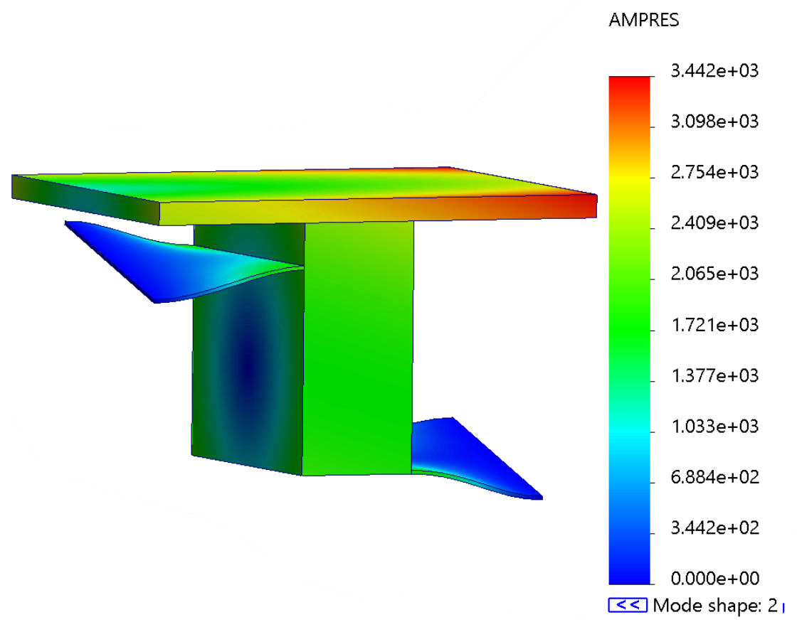

MECHANISM DESIGN · MECH&AE C162B/C294A
Design of a Flexure-Based Micro-Mirror Compliant Mechanism
Design and predict performance of a flexure-based micro-mirror that can translate up and down to modulate the phase of light reflected off its surface for high-impact precision applications. Consider FACT topographies in the synthesization of the desired DOFs.